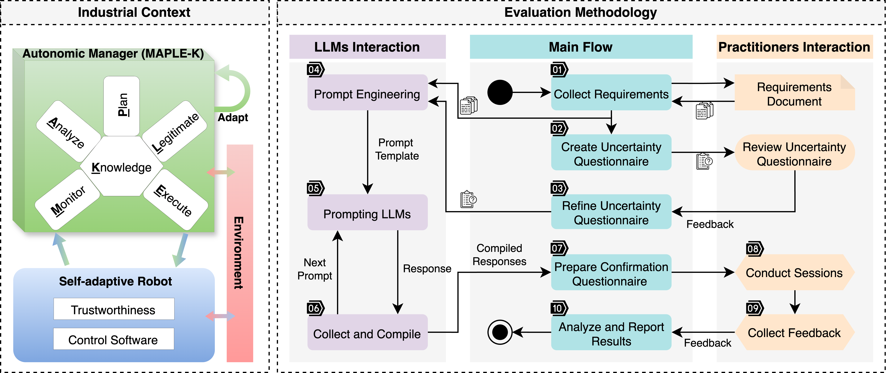
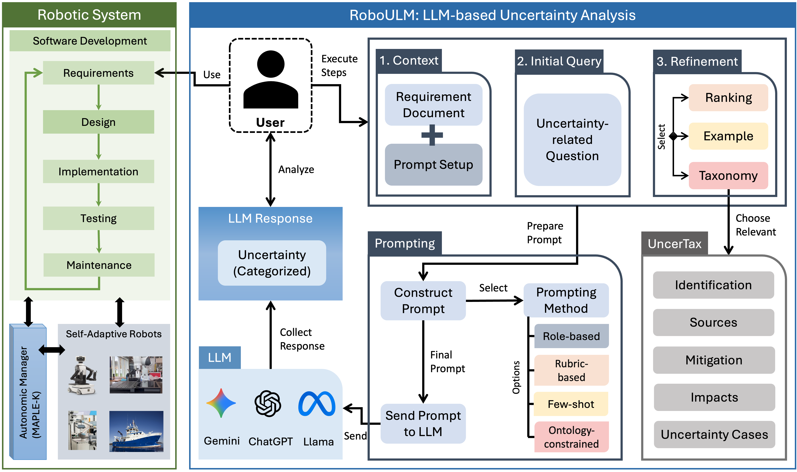

About the Briefing
Understanding the uncertainties present in complex systems, such as self-adaptive robotics, along with their potential impacts and mitigation strategies, has always been a major challenge for researchers and industry professionals. To assist industry professionals in systematically and automatically identifying uncertainties in self-adaptive robotics using large language models (LLMs), we developed an uncertainty taxonomy, an LLM-based uncertainty identification approach, a tool named RoboULM.
This briefing [1] will cover the LLM-based uncertainty identification approach, prompting techniques, and the uncertainty taxonomy. It will feature interactive sessions with RoboULM, including a live tool demonstration and hands-on session, as well as insights gained from studies conducted with industry professionals involved in the development of various types of robots. The content of this briefing was developed as part of the EU project RoboSAPIENS, which aims to ensure the trustworthiness of self-adaptive robots.
[1] Hassan Sartaj and Shaukat Ali, "LLM-Assisted Uncertainty Identification in Self-Adaptive Robotics," In 2026 IEEE/ACM 48th International Conference on Software Engineering (ICSE-Companion ’26) , 2026, DOI: 10.1145/3774748.3776596.
Learning Objectives
To understand uncertainties in self-adaptive robotics, their sources, impacts, real-world scenarios, and current practices.
To introduce approaches developed for automated and systematic uncertainty identification using LLMs.
To learn different prompt engineering techniques and their practical results.
To gain insights into the effectiveness of LLMs, derived from a study conducted with professionals from four industrial robotic case studies.
To attend tool sessions (demo and hands-on) and understand how uncertainty identification approaches are applied in practice in different robotic cases.
To learn how to apply LLMs and prompting techniques for uncertainty identification and mitigation in domains beyond robotics.
Briefing Outline (90 Minutes)
The tentative outline for this briefing is as follows.
Introduction & Context
A brief introduction to self-adaptive robotics and an overview of the RoboSAPIENS project, including industrial use cases.
Understanding Uncertainty
Overview of uncertainty in the context of self-adaptive robotics.
LLM Feasiblity for Uncertainty Identification
Overview of a study conducted to evaluate the potential of LLMs in enabling a systematic and automated uncertainty identification, its results, and the insights obtained.
Uncertainty Taxonomy
Introduction to an uncertainty taxonomy (UncerTax) developed based on insights from industry professionals and results from LLMs.
LLM-Assisted Uncertainty Analysis
Overview of RoboULM: A human-in-the-loop approach and tool to supports practitioners in systematically exploring uncertainties at the design stage using LLMs.
Tool Demo
RoboULM feature overview and demonstration with example cases.
Hands-on Exercise
RoboULM hands-on session with examples case studies.
Conclusion & Feedback
Discussion with attendees and gathering their feedback.
Presenter Biographies
Hassan Sartaj
Simula Research Laboratory, Oslo, Norway
Hassan Sartaj is a Postdoctoral Fellow at Simula Research Laboratory. His research focuses on software testing, AI for software engineering, model-driven engineering, digital twins, and uncertainty. He is a Professional Member of ACM and IEEE. He is an active reviewer for several prestigious journals, including TSE, TOSEM, EMSE, ASE, JSS, and SoSyM, as well as a program committee member for leading conferences including ICSE, ASE, FSE, ISSTA, and MODELS. Recently, he received a Best Reviewer Award from SoSyM journal.
Shaukat Ali
Simula Research Laboratory and Oslo Metropolitan University, Norway
Shaukat Ali is a Chief Research Scientist, Research Professor, and Head of the Department at Simula Research Laboratory. He focuses on devising novel methods for cyber-physical systems using AI, digital twins, and quantum computing. He regularly serves as a program committee member for software engineering conferences (e.g., ASE, FSE, ICSE-SEIP, ICST) and organizing committees. Additionally, he serves as an associate editor for ACM TOSEM and Springer EMSE journals.
Associated Research Works
Identifying Uncertainty in Self-Adaptive Robotics with LLMs
This work explored LLMs' ability to identify uncertainties in self-adaptive robots by utilizing prompting techniques and system requirements. We conducted a study with industry professionals using the requirements of four real-world industrial robotic use cases (as part of RoboSAPIENS) and 10 advanced LLMs with varying reasoning capabilities. The results showed LLMs' effectiveness in identifying uncertainties 63-80% of the time, along with uncovering overlooked uncertainties and interesting scenarios.

Reference: Hassan Sartaj, Jalil Boudjadar, Mirgita Frasheri, Shaukat Ali, and Peter Gorm Larsen, "Identifying Uncertainty in Self-Adaptive Robotics With Large Language Models," IEEE Software, vol. 43, no. 1, pp. 89-97, Jan.-Feb. 2026, DOI: 10.1109/MS.2025.3620578. Link
LLM-based Human-in-the-Loop Uncertainty Analysis
This work presents a systematic human-in-the-loop approach and tool, RoboULM, designed to assist robotics professionals in identifying and analyzing uncertainties using large language models (LLMs). RoboULM supports the identification of potential uncertainties in robotic systems, assessment of their impacts, and iterative refinement of LLM responses toward more comprehensive uncertainty analysis. In addition, we present UncerTax, an uncertainty taxonomy for self-adaptive robots providing a structured categorization of uncertainties derived from four industrial case studies. UncerTax is available at GitHub in both PDF format and as an interactive webpage.

Reference: Hassan Sartaj, Jalil Boudjadar, Mirgita Frasheri, Shaukat Ali, and Peter Gorm Larsen, "Human-in-the-Loop Uncertainty Analysis in Self-Adaptive Robotics Using LLMs". 2026. Submitted to IEEE RAM and currently under review.